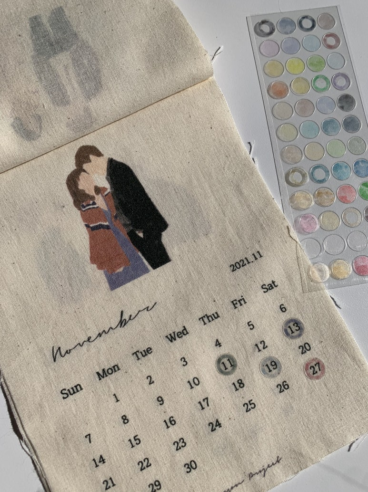
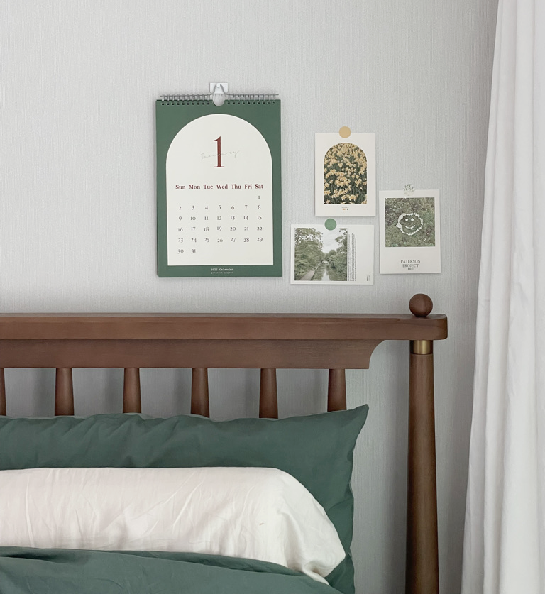
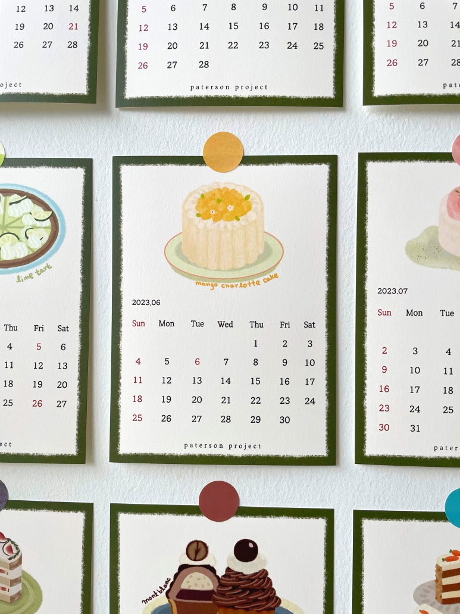
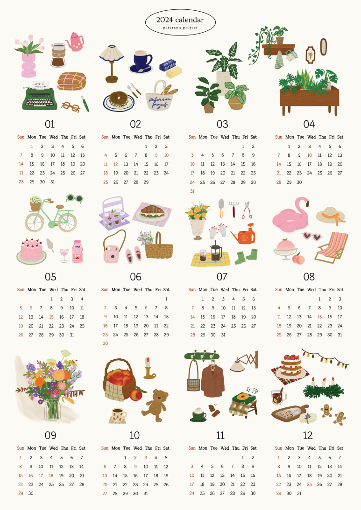
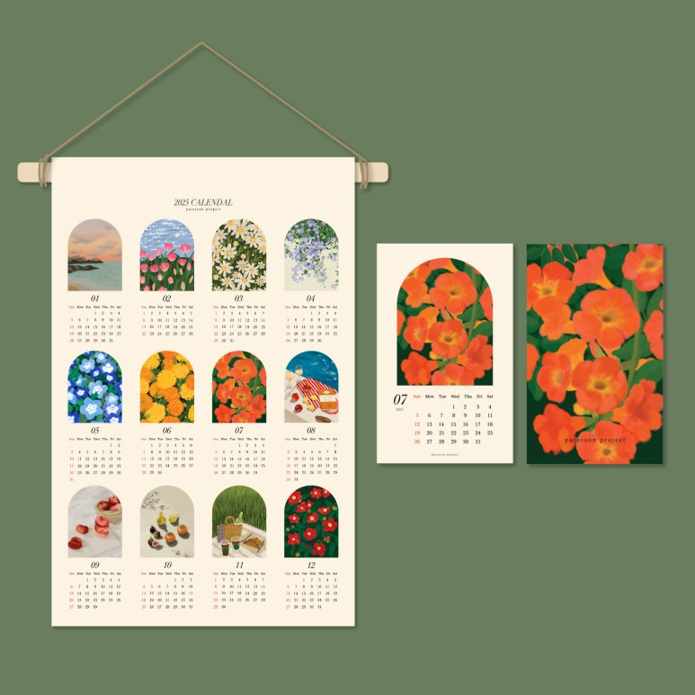
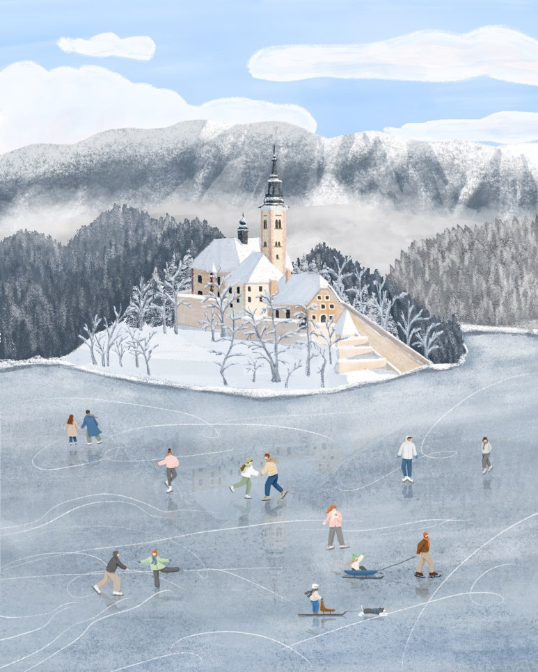
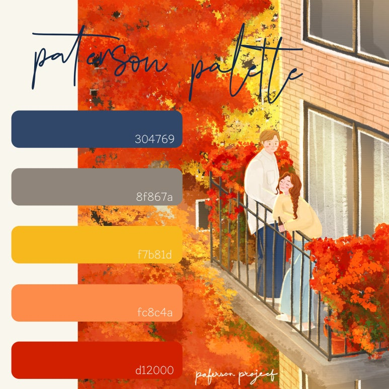
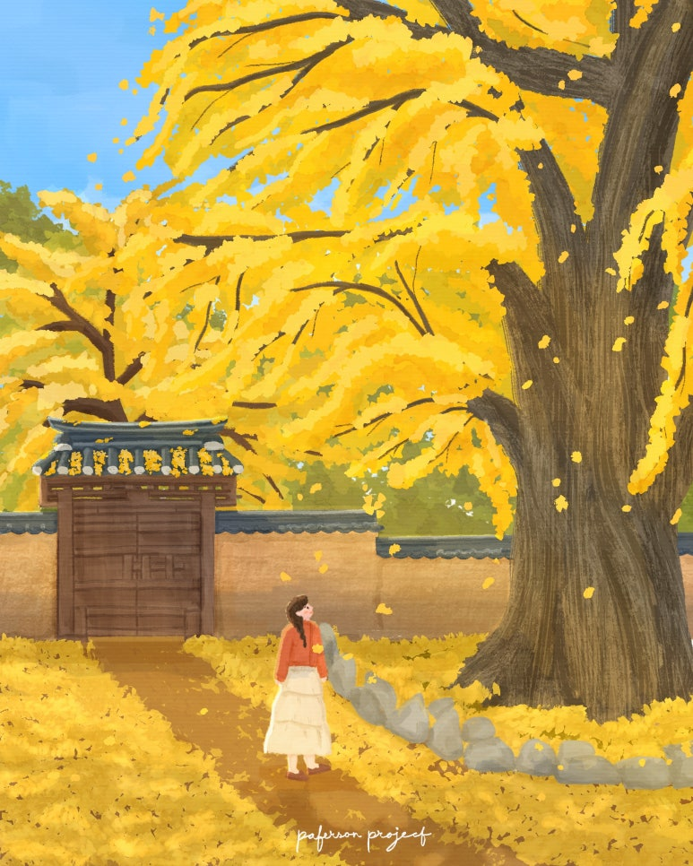
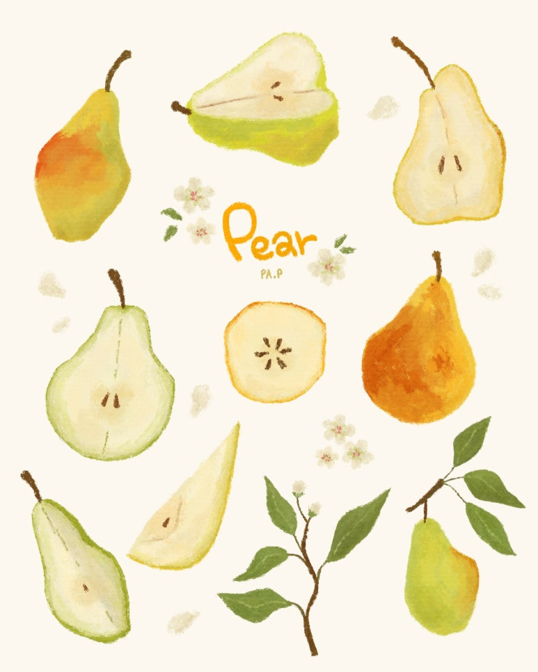

2021
패브릭 캘린더
달마다 색 네 개를 골라 48색 도트 스티커로
일러스트레이터 & 컬러 가드너 패프 직함 확인: 컬러 가드너 / 컬러리스트
계절 한정 굿즈, 패키지, 시즌 캘린더에 들어갈 그림 의뢰를 받아요. 회사로 찾아가는 단체 그림 클래스도 준비하고 있어요.

해마다 만든 달력, 2021년부터 2026년까지
그리는 데서 끝내지 않고, 종이와 천을 고르고 판형을 정해 직접 만들었어요.

2021
달마다 색 네 개를 골라 48색 도트 스티커로

2022
달마다 초록의 톤이 달라지는 포스터

2023
직접 만든 브러쉬로 그린 케이크

2024
열두 달을 한 장에, A2

2025
양면 엽서 11×18cm, A4 포스터, 패브릭 45×65cm

2026
엽서 10×14.8cm, A4 포스터, 메모 칸
가상의 브랜드를 정해 그림을 패키지에 올려 봤어요


차를 마시는 평온한 시간에 향긋한 에너지를 더하기 위해, 깊이 있는 숲의 초록을 주조색으로 기획하였고, 그 위로 리듬감 있게 배치된 핑크와 화이트의 꽃송이들은 차가 우러나며 피어나는 향기와 생동감을 시각적으로 전달합니다.
Wildflowers (2026) Digital Illustration (Impasto Oil Texture), Adobe Fresco
Concept Work는 실제 납품이 아닌 개인 작업이에요. 오른쪽 아래 라일락 향수 패키지도 같은 방식의 작업이에요.
그림에 쓴 색을 팔레트로 정리해요

주조색과 포인트 색을 뽑아 그림과 함께 공개해 왔어요. 인스타그램에서는 매주 컬러 팔레트 이야기를 올려요.
패프가 이 그림에 정리한 다섯 가지 색




회사로 찾아가는 단체 그림 원데이클래스
네. 잘 그린 그림을 뽑는 수업이 아니라, 각자 한 장을 끝까지 완성하는 수업이에요. 진행 방식 확인
아직 첫 수업 전이에요. 첫 클래스를 함께 열 회사·기관을 찾고 있어요.재료를 따로 사거나 나눠 줄 필요가 없어요. 재료 준비 주체 확인
내부 보고에 바로 붙일 수 있게요. 발송 가능 여부 확인
인원과 시간은 맞춰 협의해요. 공간 조건 확인
한 장을 한 번에 그리지 않고 작은 조각으로 나눠 하나씩 완성해요. 어려운 관찰법 대신 '내 컵은 어떻게 생겼지?' 같은 질문부터 시작해요. 진행 방식 확인
송년회 프로그램, 사내 워크숍, 직원 문화 프로그램에 맞아요. 장기자랑과 술 대신, 앉아서 한 장씩 그리는 시간이에요.
태블릿 없이 종이 재료로 준비해요. 구체 재료 확정 전
해마다 달력을 만들어 온 일러스트레이터 패프가 직접 진행해요. 미술을 전공하진 않았어요. 재밌어서 그리기 시작했고, 처음 그려 보는 분들과 그 경험을 나누고 싶어 수업을 준비했어요. 문장 사용 확인
그림 이야기와 작업 비하인드를 올려요.
시안에서는 예시 3편이에요. 나중에 블로그 새 글이 자동으로 표시돼요.
영화 〈패터슨〉에서 가져온 이름
일상은 매일 반복되는 듯 보이지만, 그 안에는 반드시 저마다의 결을 가진 빛나는 변주의 순간이 존재합니다.
매일 같은 하루 속에서 작게 빛나는 순간을 많은 사람과 나누고 싶어서 지은 이름이에요.
반복되는 일상 속 빛나는 변주의 순간을 담습니다.
작업 의뢰 및 협업 문의는 메일이나 카카오톡 채널을 통해 남겨주시면 최대한 빠르게 답변해 드립니다. 아래 내용을 함께 적어 주시면 첫 답장부터 구체적으로 이야기할 수 있어요.
💌 paterson_project@naver.com카카오톡 채널 '패터슨프로젝트'